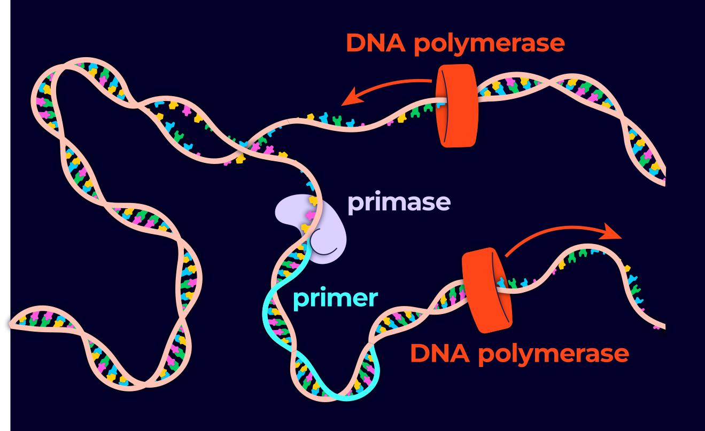
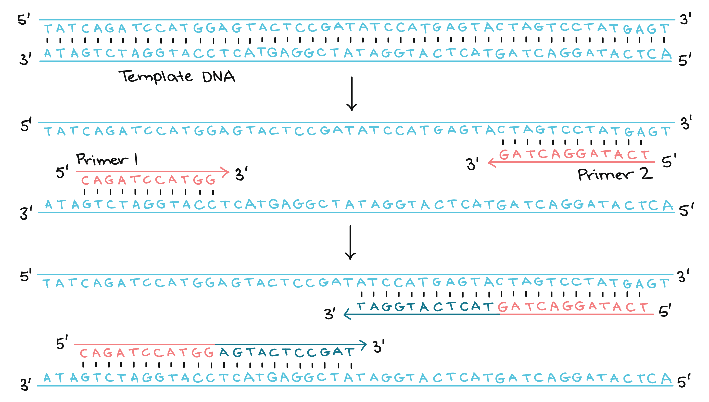
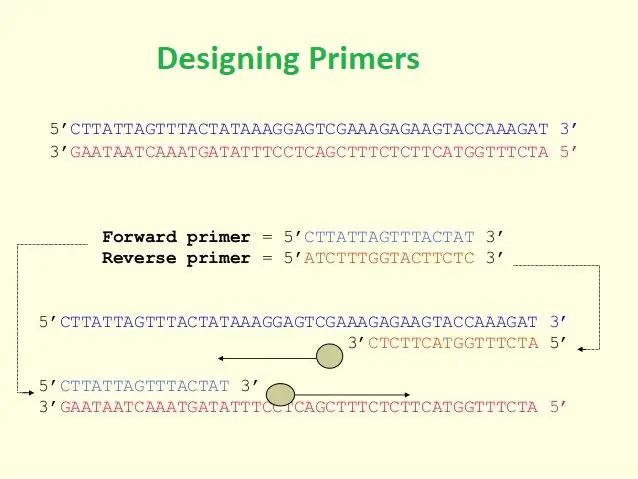
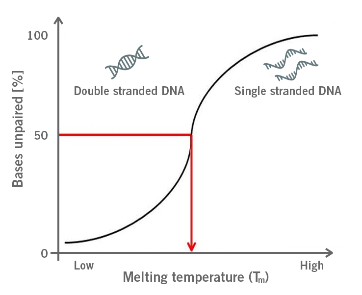
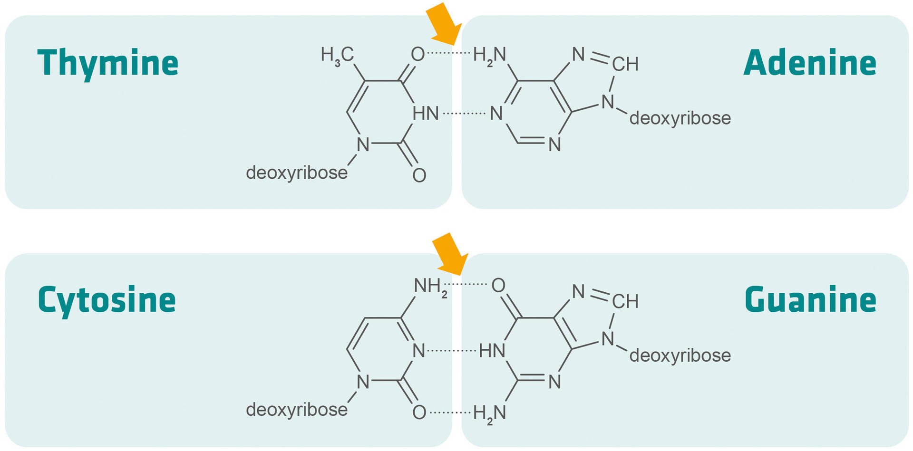
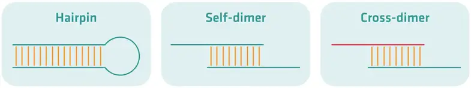
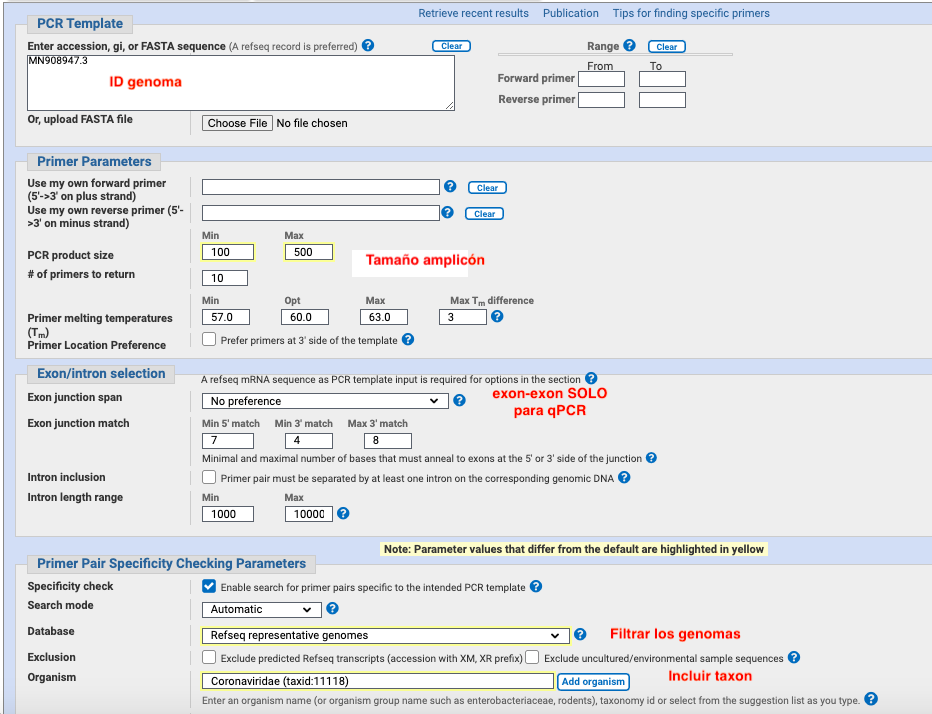
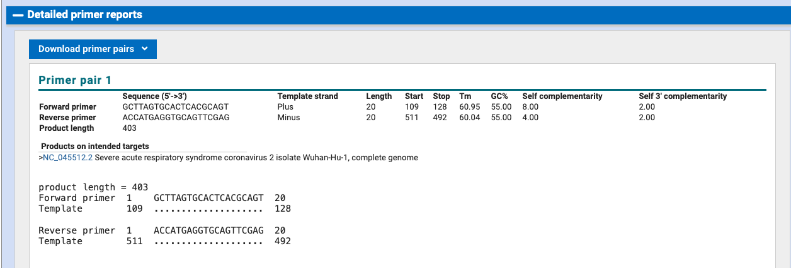

Primers (cebadores)#
La reacción en cadena de la polimerasa (PCR) es una técnica de laboratorio muy común que se utiliza para obtener millones copias de una región específica del ADN. El objetivo principal de la PCR es amplificar dicha región generando suficiente cantidad de ADN para poder analizarlo o usarlo en otros experimentos. Por ejemplo, el ADN amplificado puede enviarse a secuenciar, observarse mediante electroforesis en gel o clonarse en un plásmido para investigaciones adicionales.

Qué se requiere para realizar una PCR?#
Nucleótidos
Taq polimerasa
Primers: son las secuencias cortas (aprox 20n) que pueden iniciar la replicación de DNA y le dan especificidad a la PCR

Ciclos de la PCR#
Desnaturalización (96 °C): Se calienta fuertemente la reacción para separar, o desnaturalizar, las hebras de ADN. Esto genera plantillas de cadena sencilla para el siguiente paso.
Alineamiento (55–65 °C): Se enfría la reacción para que los cebadores (primers) puedan unirse a sus secuencias complementarias en el ADN monocatenario.
Extensión (72 °C): Se aumenta la temperatura para que la Taq polimerasa extienda los cebadores, sintetizando nuevas hebras de ADN.
Parámetros para diseñar primers#
1. Especificidad#

forward primer: primeros nucleótidos gen 5’-3’
reverse primer: complemento reverso 5’-3’
2. Longitud#
18-24 bases es óptimo
si es muy corto pueden producir amplificaciones poco específicas
si es muy largo pueden producir hibridación lenta y se pierde la exponencialidad de la reacción
3. Temperatura de unión#
La temperatura de melting (Tm) es aquella donde la mitad de los primers se disocian del DNA. Los dos (forward y reverse) deben tener similar Tm. Un rango de 52-58°C produce los mejores resultados.

4. Contenido de GC#
Un contenido alto de GC mejora la estabilidad entre los primers y la secuencia molde. El contenido ideal de GC de un primer es 40-60%.

5. Estructuras secundarias#
Dependiendo de la secuencia del primer, se pueden formar estructuras secundarias, lo que conlleva a que se hibridice entre sí en vez de unirse al DNA molde

https://microbeonline.com/designing-pcr-primers-design-consideration-and-uses/
PrimerBlast: estudio de caso primers para Sars-Covid19#
Vamos a utilizar una herramienta para diseñar primers teniendo en cuenta los parámetros especificados anteriormente. Para ilustrar el proceso, vamos a enfocarnos en el genoma de Sars-Covid que ya habíamos descargado.
Vamos a descargar o copiar el genoma del Sars-Cov:
Entrar a https://www.ncbi.nlm.nih.gov/tools/primer-blast/ y escoja los parámetros idóneos (ver recomendaciones arriba), por ejemplo:
a. PCR product length: productos cortos pueden producir múltiples targets, productos largos una PCR ineficiente (para qPCR se recomienda entre 100-500)
b. Temperatura melting (Tm) (minimum, optimal, maximum, difference between the set). Cerca de 60ºC es una temperatura alta que permite especificidad del primer (por qué cree?) y así evitar false priming. La Tm del par debe estar suficientemente cerca para que el alineamient (annealing) sea lo más sincronizado posible.
c. Para PCR normal el primer puede estar en cualquier parte del gen, incluyendo intrones, exones, regiones no-codificantes. Para qPCR debe utilizarse la opción “Primer must span an exon-exon junction” para seleccionar mRNA
d. Refseq proporciona secuencias de ocurrencias naturales occurring sequences. Descarta secuencias de plásmidos o constructos de vectores
e. Selecciona el organismo para BLAST

3. Luego de dar click en “Get Primers”, evaluar las opciones
Análisis de PrimerBLAST
¿Cómo interpretas las tablas?
¿En qué posición amplifica el fragmento?
¿Qué tan largo es el amplicón?
Análisis de primers con BLAST Local#
Para realizar el análisis con BLAST a nivel local, primero debemos formatear el genoma de Sars-Cov usando mkblastdb. Recuerde que estos comandos deben estar dentro de un script slurm
##### ENVIRONMENT CREATION #####
module load blast/2.16.0_gcc-11.2.0
##### JOB COMMANDS ####
makeblastdb -in Sars_cov.dna.fa -dbtype nucl -out sarscov2_db -title "SARS-CoV_genome"
Ahora realizamos Blast de la secuencia query (los primers) contra la base de datos del genoma
##### ENVIRONMENT CREATION #####
module load blast/2.13.0_gcc-11.2.0
blastn -task blastn-short \
-query primers.fa \
-db sarscov2_db \
-out primers_vs_sarscov2.txt \
-outfmt "6 qseqid sseqid pident length mismatch gapopen qstart qend sstart send evalue bitscore"
Análisis de resultados de BLAST local
¿Cómo interpretas esta tabla?
¿Qué tan específico es el primer?
¿En qué posición amplifica el fragmento?
¿Qué tan largo es el amplicón?
Ahora vamos a utilizar python para extraer el fragmento que teóricamente debería amplificar este par de primers
from Bio import SeqIO
# Cargamos el genoma
genoma = SeqIO.read("Sars_cov.dna.fa", "fasta")
# Mejores hits de BLAST output (extraídos manualmente)
forward_primer = "GACCCCAAAATCAGCGAAAT" # forward primer de primerBlast
reverse_primer = "TCTGGTTACTGCCAGTTGAATCTG" # reverse primer de primerBlast
# BLAST best-hit coordenadas
f_sstart, f_send = 109, 128 # sstart, send: copiados manualmente de la tabla de output de blast
r_sstart, r_send = 511, 492
# --- calcular las coordenas del producto (1-based) ---
f_5 = min(f_sstart, f_send)
r_5 = r_sstart if r_sstart >= r_send else r_send
amplicon_start = f_5
amplicon_end = r_5
product_length = amplicon_end - amplicon_start + 1
print(f"Las coordenadas del amplicon son: {amplicon_start} - {amplicon_end}")
print(f"La longitud del produco es: {product_length} bp")
# --- extraer la secuencia del amplicon en FASTA ---
# Extraer el amplicon
print(amplicon_seq)
# Crear un SeqRecord con un ID y descripción
amplicon_record = SeqRecord(amplicon_seq, id="amplicon_covid", description="SARS-CoV-2 CDC N1 amplicon")
# Guardar en FASTA
SeqIO.write(amplicon_record, "/home/lsalazarj/bicomp2025-2/primers/ampliconP1_covid.fa", "fasta")
Comparación entre el resultado de PrimerBlast y Blast local
¿Las posiciones que amplifica el fragmento son similares?
¿La longitud del fragmento es similar?